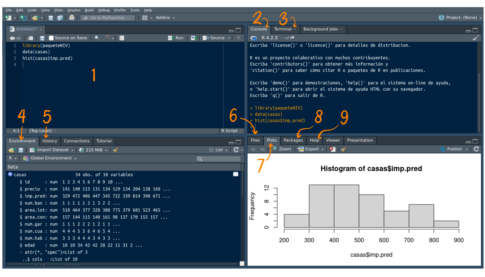

Introducción a R
Nivelatorio de Estadística
En esta unidad tiene como objetivo brindar una introducción al lenguaje estadístico R.
Contenido:
- Introducción a R
- Tipos de objetos que se pueden construir en R
- Paquetes en R
- Construcción de Documentos en R
- Tutoriales
- Importar datos

Que es R
Es un lenguaje para la computación estadística, utilizado para el procesamiento de información y generación de modelos estadísticos.
Entre las principales características están:
Licencia (GNU GPL) abierta y gratis
Creciente popularidad en ciencia de datos
Multipalataforma (Linux, Windows, MacOS)
Creado por los estadísticos Ross Ihaka y Robert Gentieman (U.Auckland - Nueva Zelanda) 1993 como lenguaje para el anaisis de datos y gráficos
Lenguaje multiparadigma
Codigo construido en C y Fortran
Gran comunidad muy activa
Gran cantidad de librerías o packages (más de 18000) en su gran mayoría están almacenadas en CRAN, Biocondictor, y otras almacenadas en github durante su proceso de construcción y ajustes

¿Qué es RStudio?
Esta interfaz o IDE que integra un conjunto de herramientas y ventanas que facilitan el trabajo con R a sus usuarios
Esta conformada por varias ventana como se muestra en la siguiente imagen:

Figura 3.2 Ventanas RStudio- Fuente (Source) : Ventana donde se trabajan los script con código que se guardan para posterior utilización
- Consola (Console) : Ventana donde se pueden escribir comandos de manera directa
- Terminal : Ventana donde se puede digitar instrucciones de git
- Ambiente (Environment) : Ventana donde se pueden observar las variables y objetos creados
- Historial (History) : Ventana donde queda registrada la secuencia de instrucciones
- Archivos (Files) : Ventana que muestra el directorio y los archivos en el que estamos trabajando
- Gráficos (Plots) : Ventana que presenta los gráficos construidos
- Paquetes (Packages) : Ventana que permite instalar los paquetes requeridos
- Ayudas (Help) : Ventana en la que podemos pedir ayuda sobre las sintaxis de funciones
En los siguientes enlaces se pueden descargar los programas para su instalación :
Nota
Antes de instalar RStudio se recomienda instalar los siguientes programas
- git
- Miktex o Texlife dependiendo el sistema operativo
- un visor de pdf en caso de no tenerlos
- Python
Estos programas se insertan dentro de la configuración inicial al instalar posteriormente RStudio y serán de gran utilidad al procesar informes mediante archivos Rmd
R cuenta con una ventana de ayudas que permite revisar las sintaxis y detalles de sus parámetros, al igual que ejemplos y artículos relacionados con las funciones consultadas
Para ascender a las ayudas se puede consultar directamente en la ventana Help (7 de la figura 3.2) o desde la linea de la Consola:
help("lm")
?"lm"